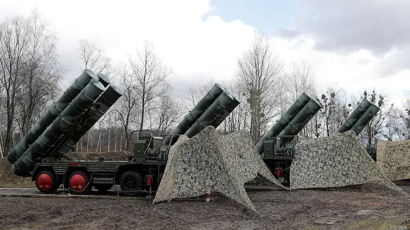

Introduction
Operation Sindoor stands as a historic milestone in India’s strategic and humanitarian response capabilities. Launched in early 2025, the operation was initiated in response to escalating tensions and humanitarian distress in a sensitive border region.
Strategic Deployment and Defense Excellence
The Indian Armed Forces executed Operation Sindoor with surgical precision. The deployment of the S-400 Triumf missile system played a critical role in air defense.
INS Vikrant, India’s indigenous aircraft carrier, supported the mission by acting as a mobile base for air operations and logistics.

Humanitarian Component and Civilian Evacuation
Thousands of civilians were rescued, provided with medical aid and temporary shelter. Air Force helicopters played a key role in extractions from high-risk zones.
Women Power in Uniform
Flight Lieutenant Vyomika Singh led air evacuation sorties, showing courage under fire.

Lt. Col. Sofia Qureshi coordinated ground logistics, maintaining morale and efficiency.

Technology and Coordination
ISRO provided real-time data. AI-powered coordination and satellite imaging ensured safe and fast decisions on the battlefield and in humanitarian zones.
International Recognition and Legacy
Global organizations praised India’s operational excellence. The mission proved India’s balance between might and morality.
"The true strength of a nation is tested not in war, but in its response to humanity." – Anonymous Officer